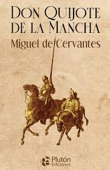
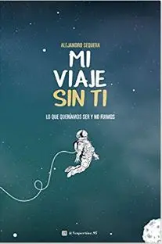
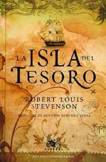

MIS LIBROS FAVORITOS
Mis libros favoritos:
1. Don Quijote
un lugar de la Mancha de cuyo
nombre no quiero acordarme,
no ha mucho tiempo que vivía
un hidalgo' de los de lanza en
astillero', adarga antigua, rocín
flaco y galgo corredor. U na olla
de algo más vaca que carnero, salpicón' las más
noches, duelos y quebrantos' los sábados, lintejas los viernes,
algún palomino de añadidura
los domingos, consumían las tres partes' de su
hacienda.

2. Venganza Millonaria
Monique Lo primero que quisiera que sepan es que, realmente yo erafeliz.
Tenía una vida absolutamente normal como cualquieracon alegrías y altibajos.
Tenía una familia grande ycomplicada donde todos siempre buscaban satisfacer
susnecesidades sin ayudar ni estar pendiente de otro

3. La Isla Del Tesoro
El squire Trelawney, el doctor Livesey y algunos otros caballeros me han
indicado que ponga por escrito todo lo referente a la Isla del Tesoro, sin omitir
detalle, aunque sin mencionar la posición de la isla, ya que todavía en ella
quedan riquezas enterradas; y por ello tomo mi pluma en este año de gracia de
17… y mi memoria se remonta al tiempo en que mi padre era dueño de la
hostería «Almirante Benbow», y el viejo curtido navegante, con su rostro
cruzado por un sablazo, buscó cobijo para nuestro techo
